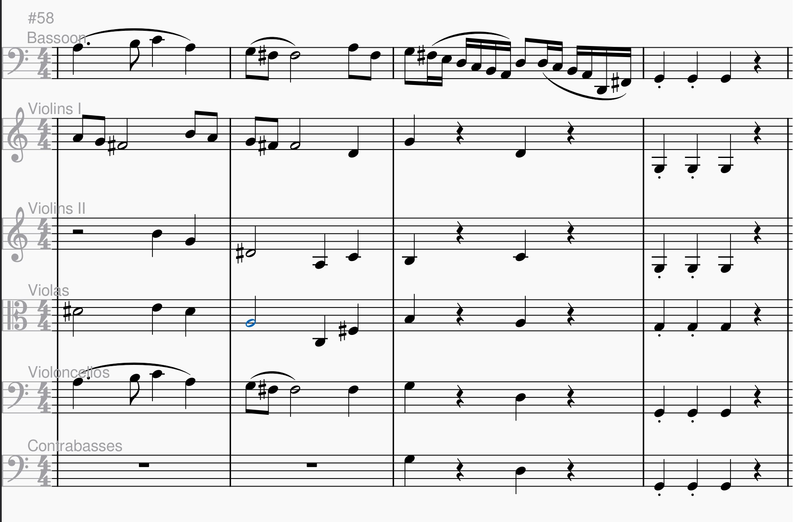
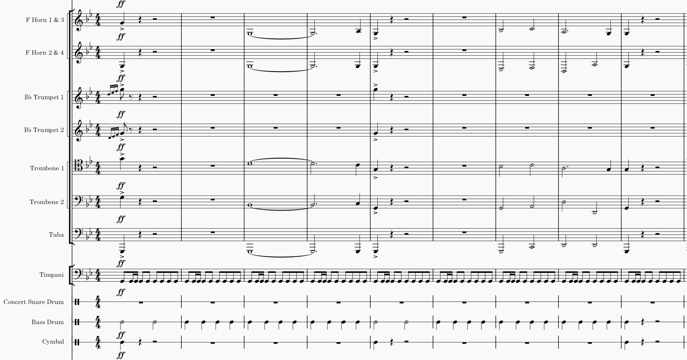
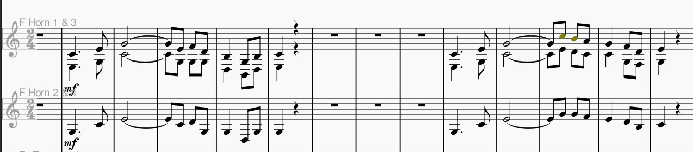

***For now I just copied my previous sections onto this page, but I will for sure clean this up and modify this section to be connected to emotion!
Composers are skilled at eliciting particular emotions in their pieces. How do they do that?
One key behaviourist theory is Classical Conditioning. Conditioning is the learning process where an unconditioned stimulus which causes an unconditioned response is repeatedly paired with a neutral stimulus so that the neutral stimulus becomes a conditioned stimulus that causes a conditioned repsonse (Lecture 3). Music can be composed to elicit certain feelings in this way when it is continously paired with some other stimulus. For instance, listen to this famous music:
Taken from: https://orangefreesounds.com/jaws-theme-song/
We can recognize that as the Jaws theme song! Under the classical conditioning theory, we may be naturally scared of sharks. Therefore, sharks are like an unconditioned stimulus, and fear, the unconditioned response. By pairing this music repeatedly with sharks we might learn to experience anxiety and fear when hearing the Jaws theme song on its own, thus making the music become a conditioned stimulus. Fun anecdote: I made my mom listen to this song while I was writing this paragraph, and her first reaction was that she was scared, so I think the classical conditioning worked! :)
Another behaviourist learning theory is Operant Conditioning. This theory is based on the idea that we can change behaviour if we provide rewards or punishments after a behaviour (Lecture 3). A lot of our learning is connected to our emotions, so reinforcements could be positive emotions such as happiness, pride, excitement, whereas punishments can be negative emotions we wish to suppress, like anger, sadness, or fear. In this sense, the sound of certain notes or chords could act like a stimulus that causes reinforcement or punishment. In my experience, as a self-taught composer who has little theoretical background on music, I depend a lot on experimentation to figure out the kind of sound I am looking for. When certain chords or melodies sound bad, I am less likely to use those chords. These nasty feeling I get when listening to my bad chords or melodies can be like a positive punishment, since I will never want to use that chord progression or melody again. An example from my own work is the following accompaniment to a nice bassoon melody I came up with this summer.
I personally think that that the D# in the violas sounds awkward and muddy. Therefore, because this sounds bad, I will be less likely to produce music that sounds like this to avoid having to hear this nonsense again.
On the other hand, certain effects I think sound good tend to appear a lot in my pieces. For instance, the sound of the horns and the sound of the timpani sound surprisingly good on Musescore, my music writing software. The chills I get when I listen to their sound is like a positive reinforcement that makes me more likely to use them in my pieces. Here are some excerpts of some of my compositions that feature and abuse these great sounds (Warning, the first audio is loud, but kind of epic)!
 Emotions attached to our experiences and to the composer's experiences (link to experience here) ***expand on this process